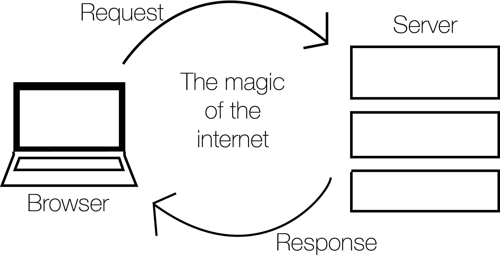
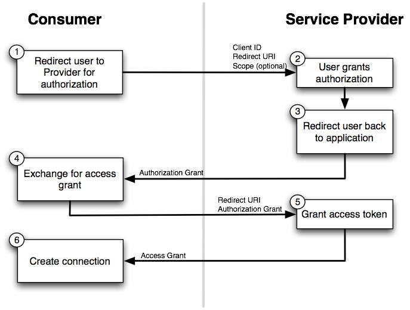

Code Weekend
Building your first webapp
Code Weekend is scheduled for September 6th and 7th, 2014 and will comprise four workshops to help participants build their very own webapp. Participants are expected to have very minimal coding exposure as we will be carefully explaining everything we do as we go. This should be extremely helpful to first time hackers especially with PennApps scheduled for the next weekend. If you haven’t already, sign up here for PennApps.
These workshops have been organized by the Dining Philosophers, PennApps and many talented individuals. Student mentors will be around to help participants as we go through these highly interactive, live-coding based workshops.
If you already have some coding experience, then feel free to skip the first session. Here’s what we expect you to know and have installed before you jump into the second session:
- The basics of how the web works.
- HTML/CSS/Javascript to the extent that you can build a simple static webpage.
- Have Node.JS, MongoDB and Sublime Text installed.
- Know how to use NPM (Node Package Manager) to install something.
- Know how to use Terminal/Command Prompt to move folders, change directories, and create files.
- Know how to fire up the Node/MongoDB shell.
Intro to Web Development and Setup
The first step in your coding career
Welcome to your first coding experience!
We’ll be going over quite a few things in this opening workshop:
- How to search effectively using Google + Using Stack Overflow
- How the internet works and why web development is so different from, say, Java
- Basic HTML and CSS and how webpages are structured
- Javascript, JSON and how to make things more fun
- What is Terminal/Command Prompt and how to run Node, Mongo and NPM
- Install Stuff
- Build your own Personal landing page
This shouldn’t take too long though, and we’re going to go ahead and leave the rest of the time for you to actually install all the applications you’ll need for the rest of these workshops. In addition, we’ll give you a basic static webpage that you can edit and turn into your own personal landing page.
So let’s get started!
An Introduction to (the) Life (of a Developer)
When coding, you’ll run into tons of small problems and errors that you don’t initially know how to solve. This is completely normal. In order to teach solutions to every problem that you could hypothetically run into, we’d need a textbook taller than the Empire State building.
Thankfully, we all have a resource with more information than that constantly at our fingertips - teh interwebz. You’ve probably searched for things using Google before, but most coding problems can actually be solved by effective Googling of your issue. Here are some tips for finding the answers to all your problems on the Internet:
- Be descriptive. If you’re searching for what’s causing an error then you can try just searching for the entire error message, or try describing what happened. For example, “Homebrew does not install through terminal on OSX Yosemite” is a better search query than “homebrew not working”, though the best search query is often some combination of plain text and the actual error message. Often Error Codes make great search queries, as long as they are contextualized.
- Along that vein, use as many specific words as possible. You can use complete sentences if you’d like, but normally four or five very descriptive nouns/verbs is ideal, and you won’t throw Google off-track by searching for unnecessary things. For example, you try to put a banner at the top of a web page, but there’s a weird white border around the entire page. Googling “there’s a weird white border around the entire page” isn’t helpful. Always start with the name of the language you think is suspect if you can (in this case, it’s CSS, since all style things on the page are controlled by CSS). Then, describe the problem with just a few words. Here, I used “CSS no page border”. The first result was really helpful, and ended up solving my problem.
These resources are also awesome:
- Stack Overflow is the best. Search results that link here are often the most helpful, and you can almost always find someone who’s had the same problem as you on here. You should mostly refrain from posting questions to Stack Overflow since odds are your question has already been answered there somewhere.
- If you’re looking for syntax, or lists of inbuilt functions, then look for the Official Documentation for the language in question. W3C Schools is great for HTML, CSS and Javascript.
- Bentobox is a great all-in-one resource to learn to code for a huge number of technologies. Code Academy has some great tutorials.
An Introduction to the web
There’s pretty much three things happening every time you open a website:
- Your browser looks up an address (say google.com) and follows it back to its home - the server which actually runs the website. This server is basically just a computer, albeit a huge, immensely powerful computer possibly comprising acres of computer hardware connected together.
- This server is what we call the backend. This server now processes your request - it could be a request to view the website or something more complicated like an attempt to log in - and sends a response back to your computer. This server will often be programmed in languages such as Python, Ruby on Rails, even Java (but not as much these days). Node.JS is a framework that lets us use Javascript on the backend as well as the frontend.
- Your computer now reads this response and converts it into the webpage you actually see on your computer. This last bit of conversion is what we call the frontend doing its work.

So basically, any work done on a server has been programmed into the backend, while anything done inside your browser has been programmed into the frontend. These are basically the two main components of any website.
You’ll see later on that requests aren’t just made of the server when we first open the website; it’s often faster to make smaller requests first, load the important parts of a webpage and then request additional bits of information when thhey’re needed (think Facebook’s Newsfeed). It’s also used when we do things like log in to a website. This is one of the reasons why Javascript is so useful as a frontend programming language, as it allows us to do these kinds of things very easily and update the webpage immediately without having to refresh the page.

Simple HTML and CSS
HTML (Hypertext Markup Language) is like the backbone of any webpage. It’s where we add in all the information - what they webpage actually displays as well as information about the page itself such as its title.

CSS dresses up this information. Most (but really all) webpages link to a CSS file that stores information on how a browser should display the information it recieves in the HTML. While it is possible to add CSS code into the HTML document, it is never done as it makes it nearly impossible to keep track of code and also slows down the page.
Javascript is the fun part. It does dynamic things with your webpage, updates content on the fly and can animate just about anything. We’ll talk about this later.

Every webpage is built in the HTML DOM (Document Object Model). This means that every element in the HTML is an element (or a Node, the mathamatical kind - not to be confused with Node.JS). So we could call this paragraph an element in the DOM; the same is true of any of the images and pretty much everything else here.
Let’s start with HTML (Hypertext Markup Language).

HyperText is text that will hyperlink you to other text. That’s it. Think links.
It is called a Markup Language because HTML is not written as plain text. It is marked up into the form of HTML elements called ‘tags.’ Tags are denoted by < followed by >. Below is the most basic HTML document we can create (except for the comments that we’ve added in to make things clearer).
<!– This is the most basic HTML document you can create that is complete –>
<!– This, by the way, is a comment that does not affect any of the code we write.
We can use this to leave notes in the code for our future selves,
or for others reading our code –>
<!– index.html –>
<!DOCTYPE html>
<html>
<head>
<title>Code Weekend Sample Page</title>
</head>
<body>
<p>This is a basic HTML webpage.</p>
</body>
</html><!DOCTYPE html> <html> is how you should start any HTML file. For every HTML tag that we open, there must be one that closes it. This way we can easily tell what information is contatined in what tag, and it allows for easy nesting. The obvious drawback is that this is highly verbose. For example, <html> must eventually be closed by </html>.
Usually though, we’ll include more information about the page in the <head> tag like this:
<head>
<meta charset=”utf-8”>
<meta name=”description” content=”Code Weekend Sample Page”>
<title>Code Weekend Sample Page</title>
<link rel=”stylesheet” href=”main.css”>
</head>So now we’ve specified the character set that the page uses - this is just to make sure the browser doesn’t think that the page is in a language other than english. Then there’s a description followed by the actualy page title (this is what you see in the title bar of your browser). Finally there’s a tag where we’ve linked this HTML file to a CSS document (the href component is how we tell the browser where to look for this file - it can be a path or a web address). This is how we add external CSS files to a webpage.
Now let’s get to the fun part - the <body> tag. This is where all the actual stuff that shows up on your webpage goes. Let’s try adding some information in.
<body>
<h1>Code Weekend Sample Page</h1>
<h2>Here’s a smaller heading. We can go all the way down to H6</h2>
<!– Here’s a comment that will not show up on the actual page –>
<p>
Here’s a paragraph of text. You can fill in whatever you feel like in here and just end this tag to fininsh the paragraph.
</p>
</body>Let’s look at this whole document now.
<!– This is a slightly more complete HTML document, but with no styles as yet. –>
<!– This, by the way, is a comment that does not affect any of the code we write.
We can use this to leave notes in the code for our future selves,
or for others reading our code –>
<!– index.html –>
<!DOCTYPE html>
<html>
<head>
<meta charset=”utf-8”>
<meta name=”description” content=”Code Weekend Sample Page”>
<title>Code Weekend Sample Page</title>
<link rel=”stylesheet” href=”main.css”>
</head>
<body>
<h1>Code Weekend Sample Page</h1>
<h2>Here’s a smaller heading. We can go all the way down to H6</h2>
<!– Here’s a comment that will not show up on the actual page –>
<p>
Here’s a paragraph of text. You can fill in whatever you feel like in here and just end this tag to fininsh the paragraph.
</p>
</body>
</html>Here are some more important HTML tags:
<a href="link here">text for the link</a>- used to create links<img src="path/link to image" alt="text to show if image doesn't load" />- used to add images<em>text here</em>- used for italicising text<strong>text here</strong>- used to bold text<ul>and<ol>- used to start Unordered and Ordered Lists<li>Item here</li>- used to denote each item in a list<script> Code in here </script>- used to add non-HTML code such as Javascript to a page. We can (and should) instead add ansrcattribute to the<script>tag and link to an external Javascript file to keep our ccode clean and maintainable.<div>- used to denote different divisions within your HTML body. Possibly one of the most useful tags when it comes to layout and styling in CSS.
Umm, what about CSS?
Right. So before we can decide how things should look, we actually need a way to find these things. That HTML document we said was almost complete, well, it was almost complete. The last thing we need to add in are identifiers, and these fall into two categories:
- IDs: These are unique to an individual HTML element. Once I give an ID to an element, it cannot be used again. Every element can be assigned an ID. For example,
<p id="introduction">. - Classes: These are reusable names that we give to ranges of elements. This allows us to do thigns like apply the same style (say, a font) to multiple elements rather than having to rewrtie the same thing over and over. For example, we can create multiple paragraphs with the same class
<p class="red-text"> This text is theoretically red.</p> <p class="red-text"> This text is also presumably red. </p>.
Now we have a way to decide on styles. Let’s look at that HTML document again:
<!– This is a slightly more complete HTML document, but with no styles as yet. –>
<!– This, by the way, is a comment that does not affect any of the code we write.
We can use this to leave notes in the code for our future selves,
or for others reading our code –>
<!– index.html –>
<!DOCTYPE html>
<html>
<head>
<meta charset=”utf-8”>
<meta name=”description” content=”Code Weekend Sample Page”>
<title>Code Weekend Sample Page</title>
<link rel=”stylesheet” href=”main.css”>
</head>
<body>
<h1>Code Weekend Sample Page</h1>
<h2>Here’s a smaller heading. We can go all the way down to H6</h2>
<!– Here’s a comment that will not show up on the actual page –>
<p class=”red-text” id=”intro-para”>
Here’s a paragraph of text. You can fill in whatever you feel like in here and just end this tag to fininsh the paragraph.
</p>
</body>
</html>We can also just change the style for an entire kind of element. So we could just change how all <h1> tags look. Let’s take a look at what CSS looks like:
body {
padding: 50px 100px;
}
h1 {
font-size: 40px;
font-weight: lighter;
color: blue;
}
.red-text {
color: red;
}
#intro-para {
border: 2px solid black;
}
As you can see, there are small differences in syntax depending on the selector (whether you’re changing all instances of an element, instances of a class, or just a single element by ID) but it’s mostly quite simple.
You should look through the resources at the top of this section for more information on HTML tags and CSS attributes, but the best thing to do is to Google things you’re looking to do and look for the W3C Schools or Stack Overflow results.

You can download the HTML and CSS files we looked at here by following these links.
A great way to play around with CSS styles is to right-click on this page in Chrome of Firefox, Inspect Element, and try changing the CSS styles on the right hand side of the Developer Tools window after selecting the HTML element you want to edit.

Javascript, finally!
Javascript is a scripting language and has very little to do with Java other than vaguely resembling it in syntax. By scripting language we mean that there are no Classes, Interfaces, Main Methods or any of the regular Object-Oriented Programming that we’re used to. You just write code in a file, link to it in your HTML and it exectutes.

Javascript is a very easy language to pick up. There are no types, Javascript just guesses (mostly well) what you want. This means that writing var x = 5 will create a variable named x of the type Integer with the value of 5. Writing var x = "5" would create a String named x with the string 5 as its value.
The most common types we will use are Strings (just text, such as “This is some text”), Integers (just plain old numbers, like 5, 6, 42, or 314596 - no decimal points though), Doubles (decimal points are now allowed, so 3.14 is good to go) and Booleans (True or False). There are a whole bunch of functions and operators built into Javascript that we can use on these data-types. You should search for them as and when you need to do something that you think is fairly common (you’ll be surprised by how common almost everyhting you wanna do is).
Here’s some sample Javascript code:
var myVariable = “September 12th”;
alert (“PennApps starts on ” + myVariable);This creates an alert that says “PennApps starts on September 12th”. There was absolutely no reason to use a variable here other than to show how we can use it. Here’s a function in Javascript that squares a number:
function square (number) {
return number * number;
}
// This is a single line comment that does not need to be closed.
console.log(square (5)); // This prints the result to the javascript console in your browser’s (Chrome or Firefox) developer tools.
/* This is a multi-line comment
that only ends when we do this */
// We can also write the above function as the following:
var square = function (number) {
return number * number;
}
// Here’s an anonymous function that calculates the square of 5:
(function (number) {
return number*number;
}) (5);
// In this case, we are executing the anonymous function immediately, but we don’t have to always do this:
function idPlusString (number) {
var cube = number * number * number;
return function (name) {
return “Hi “+ name + “. ” + “Your ID is ” + cube + “.”;
}
}
// This returns a function that you can add a string to. If you don’t understand this last function, it’s okay.Javascript mainly works on Objects and Arrays to store and access data.
// Here’s an Object that conatins an array
var myDetails = {
‘name’ : “Mark Gates”,
‘age’ : 24,
‘interests’: [‘Figure Skating’, ‘Javascript’, ‘Tennis’, ‘EDM’]
}
console.log(myDetails.name); // prints the name property of the object, ie, ‘Mark Gates’
console.log(myDetails.interests[1]); // prints ‘Javascript’ to the consoleObjects are essentially key-value pairs. We can access to values easily using the notation object.key.
If you haven’t noticed yet, we end almost every line (or more specifically, every command) with a semicolon. It’s okay if you end every line with one, it’s better to err on the side of more rather than less, but you can get away with leaving off the semicolons after function definitionsand pretty much everything that ends in curly braces (}).
JSON (Javascript Object Notation) is the data format of the internet. This is what is used to send data that is not HTML/CSS/JS across the internet. That could range from search results to login sessions. Another commonly used format is XML, but that is slowly being replaced everywhere by JSON. JSON is very simple to understand because every JSON file is simply one Javascript Object. It uses key-value pairs and Arrays liberally to store information. Let’s look at an example of a JSON file:
{
“employees”:[
{
“firstName”:”John”,
“lastName”:”Doe”
},
{
“firstName”:”Anna”,
“lastName”:”Smith”
},
{
“firstName”:”Peter”,
“lastName”:”Jones”
}
],
“company” : “ABC Holdings”,
“lastUpdated” : “September 6th”
}It’s exactly like a Javascript Object, and that’s because that’s exactly what it is. Just for kicks, let’s compare this to XML:
<employees>
<employee>
<firstName>John</firstName>
<lastName>Doe</lastName>
</employee>
<employee>
<firstName>Anna</firstName>
<lastName>Smith</lastName>
</employee>
<employee>
<firstName>Peter</firstName>
<lastName>Jones</lastName>
</employee>
</employees>
<company>ABC Holdings</company>
<lastUpdated>September 6th</lastUpdated>
So much better isn’t it! JSON is way more readable and saves you the trouble of having to close every tag you open. Now imagine this on the scale of thousands of search results. JSON makes your life much easier.
What is Terminal/Command Prompt?

Terminal (or Command Prompt on Windows) is basically a way for us to access the Command Line. This gives us access to a wonderful variety of things that we can do. We will be spending s good amount of time this weekend in here, so let’s take some time to get used to it.
Once you fire up Terminal or Command Prompt (on Windows, you’ll later need to run cmd.exe by right clicking on the shortcut and clicking Run as Administrator, you’ll know it’s running as Admin if your path ends in ../system32), here’s how you get around:
ls(DIRon Windows) lists all the files in the current foldercdallows you to change directory. Socd Documentswill move into the folder Documents, if there is such a folder in teh current directory. You can check this by usingls(DIRon windows). To move up a directory, say back to where you were before you went into Documents, type incd ../.mkdirallows you to make a folder. Somkdir Newmakes a folder named ‘New’.mv(moveon windows) will let you move files and folders. In Terminal you can domv ~/Desktop/MyFile.rtf /Volumes/Backup/MyFolderto move MyFile.rtf. On Windowsmove c:\windows\temp\*.* c:\tempwill move everything from C:\windows\temp to C:\temp. * works as a wildcard operator here.
Once you’ve installed Node.JS, you’ll also be able to enter commands like npm install express that will use Node Package manager to install plugins such as Express. You’ll aso be able to start up MongoDB from here.
Let’s start doing stuff!
Whoohoo! We’ve made it this far, and it’s finally time to start doing stuff.
Sublime Text 2
We’ve got to install a whole nuch of stuff now. Let’s start simple, go and download Sublime Text 2. It’s the best text editor in existence and this is where we’re gonna be doing all our work. If you have a different favorite text editor, feel free to use it, but we might be using some Sublime Packages later on.
NOTE: Sometimes, when you save, a window will pop up asking you to buy Sublime. Just ignore this and hit “Cancel”.
Node.JS
Now that you’ve got that installed, let’s move on to some slightly more complicated stuff. Let’s start with Node.JS.
Node.js is a commonly used web framework for building applications with Javascript. You need to run Node from command line. Instructions for different operating systems are below.
Mac
The easiest way to install Node is through Homebrew, a package manager for OSX. Sometimes it’s already installed on your computer, and sometimes you need to install it. Bring up a terminal window and type in “brew install node”. If it doesn’t work, go to the next paragraph. If it does, you’re done!
So, Homebrew didn’t work for whatever reason. Let’s try and install Homebrew, type this into Terminal: ruby -e "$(curl -fsSL https://raw.github.com/Homebrew/homebrew/go/install)"
If Homebrew installed succesfully, then go ahead and try brew install node. If you run into any more errors here, try Googling the error text and looking for solutions. If that still doesn’t work, look around for a mentor to help.
If Homebrew is causing too many problems then just try the installer here. You can also install NodeJS using Fink (fink install nodejs) or MacPorts(port install nodejs).
Windows
Here is a guide to getting Node.js setup with a Windows machine. There’s some extra info there that might be confusing, so below are the basic steps:
- Download the .msi file from here
- Use Windows Installer to get it set up.
Linux
There are about a million different ways to install things on various Linux-based operating systems. Go to this link for a full list.
MongoDB
Now that you’ve got Node.JS installed, let’s move on to MongoDB. Mongo is a NoSQL Database, so all data is stored as key-value pairs, similar to JSON. Of course, this being a databse, we can store, search and access large amounts of data very quickly.
Mac
Assuming you have Homebrew installed by this point you can just type brew install mongodb into terminal. Then, if all goes well, mongodb should show you three different commands that you should copy-paste into Terminal and run. Before you start mongo for the first time, type this into Terminal: mkdir -p /data/db. You should now be able to go straight into the MongoDB shell by typing in mongod into Terminal.
In case you run into any problems, look at MongoDB’s full instructions page and Google around before asking mentors for help.
Windows
MongoDB has a full set of instructions here that you should follow through till you can run MongoDB. You most probably just need to install the 64-bit version of MongoDB using their installation file. Before you run Mongo for the first time, you’dd need to run this from Command Prompt: md \data\db. Follow the instructions on the above link to run MongoDB.
Linux
Full instructions to install MongoDB on Linux can be found here.
Making a Personal Landing Page
Well done! You’ve got everything you need installed. Now let’s test what you’ve learned today. Here’s an HTML and a CSS file. Try and use this as a base to create your own personal landing page. The adventurous ones among you can eventry adn create a compelte static website, you know enough that you can just Google anything further. Take a look at some of our organizers websites for inspiration (Pranav, Lewis, Brynn) or browse around the internet to see nice design (like Medium).
Intro to Javascript and NodeJS
The most powerful web development tools ever
Topics to be covered:
- Basics of Node.js and Node package manager
- The Express framework
- Templates, sessions, and middlewares
- Simple form processing
Please download this ZIP file before the tutorial. It contains starter files with checkpoints that will be referenced during the talk.
You can find the slides from this tutorial here.
What is a Node app?
Node is a very common Javascript-based web framework. In other words, it’s a structure for making websites that many people use where the app/server logic is written mostly in Javascript. It’s great because it has modules, which are bits of code other people write that can easily be added to give new functionality to your app.
The Anatomy of a Node app
A common Node app has several main components, as described below:
app.js: The main file, and the first one to be read. At the beginning, this file initializes the functionality described in the Node modules. Then “get” and “post” requests are set up that tell the app which router methods to use. The last section tells the app to run on a particular port (3000 in this case).
package.json: A standardized JSON file containing information about this app. It’s fairly readable, but there’s info about the authors, version, repository, and versions of Node modules.
node_modules: Contains external modules, which are snippets of code written by others that perform very specific functions within your code. These are really what make Node so powerful and flexible—you can easily import functionality written by other people. You can look through Node modules on http://www.npmjs.org, or just Google functionality you want and look for modules that perform that function. To add a new Node module to your program, type “npm install module name” in the main directory of your program.
One very common module, Express, provides a lot of the framework to make our app work over the Internet.
public: Holds CSS, Javascript, image, and video files used to render web pages.
routes: Contains the routing files. The routing files tell your app what to do and where to go when deliniated functions are performed. For example, a routing file can tell the application when to render the different web pages, and how to send your name from one web page to the next.
views: Contains files that are actually rendered. This folder contains HJS, or Hogan.js, files. HJS is essentially HTML, but with a few extra features that make it easier to use.
Running a Node app
To run on Mac/Linux, bring up a normal terminal window. On Windows, search your computer for the Node.js Command Prompt application, and open it (it should look very similar to the normal command prompt).
Enter the folder the contains your Node app with simple terminal commands like “cd”. Once there, type “node” and hit enter. If you see a blank line that starts with “>”, Node is installed properly and you’re ready to go. If not, go back to the installation instructions and reinstall.
The first time you run a node app, cd into the directory and run npm install. To run the Node app, type node app.js into the terminal from the folder that contains app.js.
To see the app working, pull up an Internet browser. In the address bar, enter “localhost:3000”. If all goes well, you should be able to see your app!
Intro to APIs
Adding the internet to your app
Topics to be covered:
- What APIs are, how they work, why we use them
- Sending HTTP requests from Node
- Authenticating with an API via OAuth
- Sending emails and Venmo payments
Please download this zip file before the workshop. Check out the slides here.

Intro to Databases
Making information stick around
Topics to be covered:
- MongoDB: what it is, how to use it
- Why we pair MongoDB with Node and how
- Persisting our prior inputs
- Basic login authentication
Make sure to download these files to follow along with this workshop. Check out the slides here.